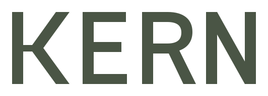

KERN · logo test sheet
Calibrated K
Check each row on screen before publishing. The point is a detail: if it disappears at small size, the mark should still read.
Primary colours
Full colour on light, reversed on dark. One-colour when reproduction is constrained.
Ink on bone
Bone on ink

Bone on moss

One colour, moss

Small sizes
Actual pixel sizes. Below 24 px, switch to the small-size symbol; at 16 px do not expect the point to survive.
120 px · min
 72 px · min
72 px · min
 32 px
24 px
32 px
24 px
 16 px · small file
16 px · small file
Icons and clear space
Exports as used by the browser and by app platforms. Hover-free, flat, and readable on both light and dark browser themes.
Favicon · 32 / 16
Clear space
Misuse
These are shown as warnings, not options. No stretching, rotation, effects, recolouring, or busy backgrounds.
Do not stretch
Do not rotate
Do not add effects
Do not rearrange the lockup